Här kan du läsa om hur man använder de olika delarna av Lexins
webbplats.
Språk
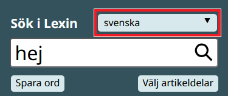
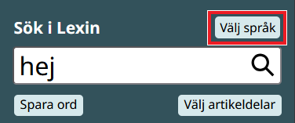
I Lexin kan du välja att slå upp ord på ett språk i taget eller på
flera språk samtidigt.
För att slå upp ord på ett språk i taget, klicka på rullistan "Välj
språk" ovanför sökfältet och välj ett språk, t.e.x. spanska.
För att slå upp ord på flera språk samtidigt, gå till menyn och välj
"Inställningar". Kryssa sedan i "Sök på flera språk samtidigt". Nu
kan du klicka på knappen "Välj språk" ovanför sökfältet och kryssa i
ett eller flera språk.
För att alltid få sökresultaten från den svenska ordboken, som har
många ord, gå till menyn och välj "Inställningar". Kryssa sedan i
"Lägg alltid till svenska resultat".
Bilder
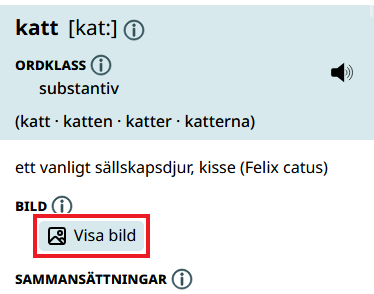
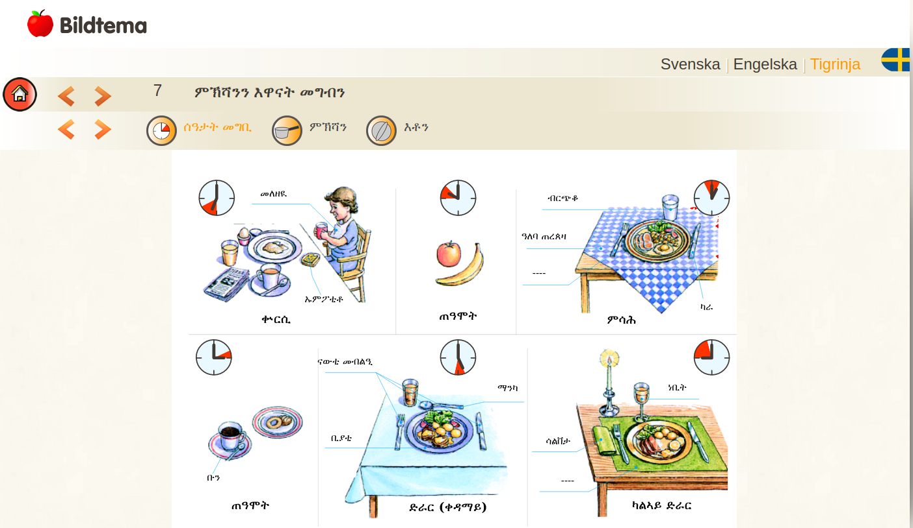
Många ord har bilder som hjälper till att förklara ordet.
För att visa en bild, klicka på knappen "Visa bild" i
ordboksartikeln.
Ord kan ha ett eller flera videoklipp som visar vad ordet
betyder.
För att visa ett videoklipp, klicka på knappen "Visa video" i
ordboksartikeln.
Ljud
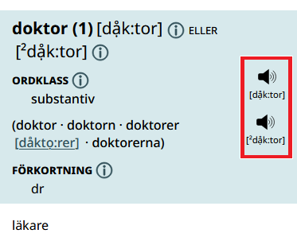
För att höra hur ett ord uttalas på svenska kan du klicka på
knappen "Lyssna på uttalet" med en högtalarsymbol.
Ord kan ha flera sätt att uttalas. Då finns det flera knappar för
"Lyssna på uttalet".
Uttal
Uttalet beskrivs också med fonetisk skrift, t.ex. "idag [ida:g]
eller [ida:]".
Kolon ":" betyder att ljudet före ska vara ett långt ljud.
När det finns två eller flera uttal skrivs det med "eller" mellan
uttalen. "[ida:g] eller [ida:]" betyder att det går att uttala sista
bokstaven "g" och att det går att hoppa över "g", båda uttalen är
okej.
Det finns mer information om den fonetiska skriften på
sidan "Läs om hur man tolkar sökresultaten" här i Lexin.
Infoknappar
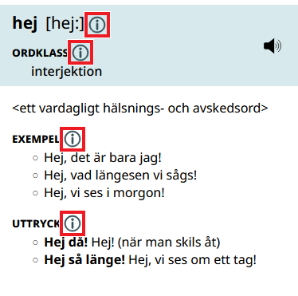
Knapparna "Visa information" med en "i"-ikon i artiklarna kan du
klicka på för att öppna hjälpsidor.
Om du inte vill att knapparna ska synas, gå till menyn och välj
"Inställningar". Kryssa sedan ur "Visa infoknappar i artiklar".
Artikeldelar
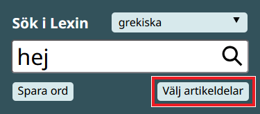
En artikel för ett uppslagsord består av ett antal olika delar
såsom uttal, böjningsformer och ordklass. De olika delarna kan du
läsa mer om på sidan "Läs om hur man tolkar sökresultaten" här i
Lexin.
För att dölja en viss del av en artikel, klicka på knappen "Välj
artikeldelar" under sökfältet och kryssa ur den relevanta delen,
exempelvis "ordklass".
Tangentbord
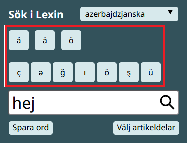
Du kan få hjälp med inmatning av tecken som din dator eller mobil
saknar.
För att få upp knappar med de svenska tecknen "å", "ä" och "ö", gå
till menyn och välj "Inställningar". Kryssa sedan i "Visa svenskt
tangentbord med å, ä, ö".
För att få upp knappar med tecken på det språk som används i
lexikonet du har valt, gå till menyn och välj "Inställningar".
Kryssa sedan i "Visa tangentbord för andra språk". Om du exempelvis
har valt att söka i Lexin med arabiska översättningar får du hjälp
med inmatning av arabiska tecken.
Spara ord
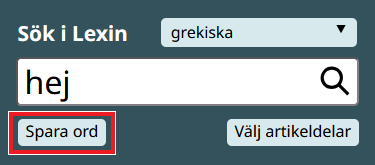
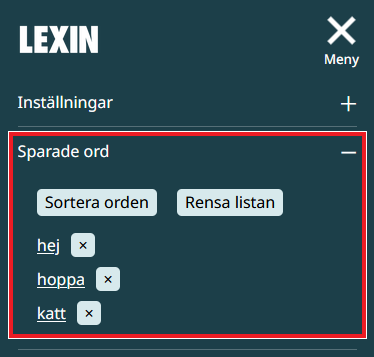
Du kan spara ord du har slagit upp.
För att spara det aktuella sökordet, klicka på knappen "Spara ord"
under sökfältet
För att se de ord du har sparat, gå till menyn och välj "Sparade
ord". Där kan du slå upp ett sparat ord genom att klicka på ordet i
listan. Du kan sortera alla sparade ord i bokstavsordning med knappen
"Sortera orden", och du kan även ta bort alla sparade ord med knappen "Rensa
listan"
Ladda ner lexikon (Lexin offline)
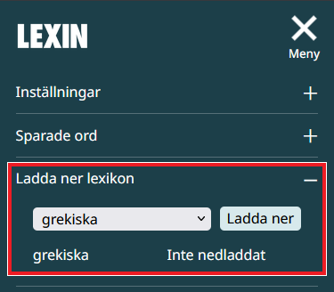
Du kan ladda ner ett eller flera lexikon från Lexin.
För att ladda ner ett lexikon, gå till menyn och välj "Ladda ner
lexikon". Välj språk i rullistan "Välj språk att ladda ner" och
klicka på knappen "Ladda ner". För att ta bort ett nedladdat
lexikon, klicka på knappen "Ta bort nedladdnng" med en
kryssikon.
När du har laddat ner ett lexikon kan du använda Lexin utan att ha
tillgång till Internet.
Andra söktips
För att få fram sammansatta ord gör du så här: Skriv "regn-" så får
du fram alla ord med förledet regn. Skriv "-regn" så
får du fram alla ord med efterledet regn.
För att få större text kan du använda din webbläsares zoomfunktion.
På en mobil kan du zooma med två fingrar på skärmen. På en dator kan
du använda webbläsarens meny, eller Ctrl och
plustecken (fungerar oftast på Windows och Linux) eller
Cmd och plustecken (på Mac).